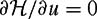
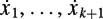
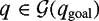

|
| |||||||||||||
|
|
||
Motion planning for nonholonomic and underactuated systems has been the subject of a great deal of recent research, and the results could easily fill several books (see, e.g., the books edited by Li and Canny [288] and Laumond [266]). In this section we summarize a few useful approaches. The approaches can be classified by the type of robot to which they apply (e.g., the structure of the equations of motion, and with or without control constraints or drift) or the nature of the problem (with or without obstacles or cost function to be minimized). Motion-planning approaches with roots in control theory tend to apply to systems with particular structure and no obstacles, while approaches based on search algorithms are computationally intensive and are suited to finding collision-free trajectories among obstacles. Some approaches attempt to combine the benefits of control-theoretic and search-based methods.
The problem is to find a motion (x(t), u(t)), t ∊ [0, tf] satisfying the equations of motion (12.6) such that x(0) = xstart, x(tf) = xgoal.In the presence of obstacles, where represents the free configuration space, we also require , t ε [0, tf].
For some simple underactuated systems, it is possible to solve analytically for optimal controls transferring the system from one state to another using the ideas developed in the previous chapter. Consider, e.g., a driftless system with m = 2 controls and n = 3 states and the control vector fields g1 = [1, 0, x2]T and g2 = [0, 1, 0]T. Optimal control for such a system was first studied by Brockett [66]. The system can be written
Assume the time of motion is fixed, tf = 1, and the objective is to minimize a measure of the control input energy:
Then the Hamiltonian is written

Solving the necessary condition , we get
The adjoint equation indicates that λ1 and λ3 are constant, and . Differentiating equation (12.25) with respect to time, we get
These differential equations imply that optimal controls u1(t) and u2(t) are 90-degree out-of-phase sinusoids of the same amplitude and frequency, i.e.,
Given x(0) and x(1), the integrals of the equations of motion (12.23) define three equations to solve for λ3, the frequency of the sinusoids, and the constants u1(0) and u2(0), defining the amplitude and phase.
These equations may be difficult to solve generally, but one simple case is of particular interest. We will choose controls so that at the end of the motion, x1 and x2 have returned to their initial values, while x3 has changed from x3(0) = 0 to x3(1) = x3,goal. In this case, λ3 = 2kπ, where k is any nonzero integer. This assures that
so x1 and x2 return to their initial values. Plugging λ3 = 2kπ into the the controls [equations (12.26) and (12.27)], and putting the controls into the objective function (12.24), we find that
The cost of the motion is independent of the choice of k,sowe choose k = ±1.
Integrating the equation of motion for x3,we find that
for k = 1, and
for k = −1. Therefore, if x3,goal > 0, we choose k = −1 and any choice of u1(0) and u2(0) satisfying the condition x3(1) = x3,goal (all choices have the same cost). If x3,goal < 0, we choose k = 1 and proceed similarly. Notice that there is a one- dimensional set of solutions in the two-dimensional (u1(0), u2(0)) space, as we only need to satisfy the single equation x3(1) = x3,goal.
The motion described above suggests a strategy for motion planning for a more general class of systems. First, use the controls to drive m state variables directly to their goal values. Then perform motions that return these state variables to their goal values, but cause a desired net motion in the other state variables.
As an example, beginning from rest, a free-floating astronaut in space can control the orientation of his body by moving his arms in a cyclic pattern. At the end of a cycle, the shape (arm joint angles) of the astronaut is restored, but the orientation of his body has changed. (Keep in mind that the astronaut's total angular momentum is zero throughout the motion since there are no external forces.) We can decompose the astronaut's configuration into shape variables (also called base variables), describing the variables over which he has direct control (the arm joint angles), and fiber variables (the orientation of his body), which are coupled to the controls in a state-dependent manner.[3] In the example system (12.23), the shape variables are x1 and x2 and the fiber variable is x3.In the single-leg hopper system of example 12.4.4, the shape variables are the leg angle q2 and leg extension q3, and the fiber variable is the body angle q1 (see figure 12.20).
Many driftless systems can be transformed to a form similar to equation (12.23), allowing the control strategy of directly steering the shape variables to their goal configurations, and then performing closed loops (e.g., sinusoids) in the shape variables to achieve desired motions in the fiber variables. For example, the unicycle can be converted to this form by performing a coordinate transformation and an input feed- back transformation. Define new coordinates z = A(x)x and transformed controls v = B(x)u, where
Then the original unicycle system is transformed to an equivalent system of the form (12.23):
A system like this is an example of a broader class of chained-form systems, which are the topic of the following subsection.
The motion strategy of driving the shape variables to their goal values and then performing closed loops generally results in suboptimal motions, but it is rarely possible to solve the optimality conditions analytically. In any case, the quadratic "energy-like" objective function (12.24) may not have much physical meaning for an input-transformed system such as the unicycle above. Section 12.5.3 discusses numerical methods for finding approximately optimal motion plans.
Consider the following system with m = 2 controls and n ≥ 3 states, generalizing the system with n = 3 described above:
Such a system is said to be in chained form. Considering a Lie product of the form [g1, [g1, … [g1, [g1, g2]]]], where g1 appears k times, we find that the Lie product has a value (−1)k in the k + 2 component of the vector field, and zeros in all other components. Therefore, the Lie algebra Lie({g1, g2}) is full rank, and the system is STLC at all x for .
To steer such a system, we can generalize the approach presented previously. First, drive x1 and x2 to their final values. Then choose controls u1(t) and u2(t)tobe sinusoids at integrally related frequencies. For example, let
where k is a positive integer. Then has components at frequency 2π(k − 1), has components at 2π(k − 2), etc. Applying the controls for tf = 1 will return the x1, …, xk+1 variables to their initial values—the nonzero frequency means that  integrate to zero net change over the cycle. For the variables xk+2, …, xn, however, the periodic controls will result in a nonzero DC (zero frequency) component in their time-derivatives, meaning that they will be changed over the cycle. The net change to xk+2 can be computed to be
Therefore, an algorithm to drive the system to the goal state is the following:
Drive the variables x1 and x2 directly to their goal values.
For each k = 1 … n − 2, in ascending order, apply the controls (12.29) and (12.30) for time tf = 1 with a and b selected according to equation (12.31) to drive xk+2 to its desired value, leaving all x1, …, xk+1 unchanged.
A numberof n-state2-input systems can be transformed to the chained form (12.28), including tractor-trailer systems with multiple trailers [393]. There are also other forms similar to the chained form presented here, including forms with more than two inputs; see, e.g., [85,330,332,419].
Many motion-planning algorithms based on series expansions and averaging of the equations of motion use sinusoidal inputs at appropriately chosen frequencies and phases to "tickle" the system in desired Lie bracket directions (see, e.g., [34,50,74– 76,175,279,280,327,328,333,342,422,423]). This idea also applies to mechanical systems with drift. For a locomotion system where motions of the shape variables induce motion of the fiber variables, these sinusoidal inputs generate "gaits" for the system.
The previous chapter outlined a method for using gradient-based nonlinear optimization to find locally optimal trajectories for fully actuated dynamic systems. A similar approach can be applied to underactuated systems [147,148,343]. We typically choose a finite parameterization of the control history u(t), since any a priori parameterization of the trajectory q(t) will likely describe trajectories that are infeasible for the system due to the underactuation constraints. Alternatively, we could solve for q(t) and enforce equality constraints at time instants throughout the trajectory to ensure that there exists a feasible u(t) for the given q(t).
Two features of this approach are (1) it is very general—motion planning problems for many underactuated systems, including those with drift, can be encoded as nonlinear programs; and (2) the ability to minimize an objective function may result in motions that are "efficient" in some way. Significant drawbacks, however, are as outlined in the previous chapter: (1) a good initial guess must be provided to the solver, as the solver will find only a locally optimal solution; and (2) numerical difficulties, singularities, and nonconvexity may prevent the solver from converging to a solution. The generality of the approach means that it uses little information about the particular structure of the system to ensure convergence.
For convex systems, systems with particular structure [314], or particular choices of the control parameterization, it may be possible to demonstrate favorable convergence properties for nonlinear optimization. In general, however, there are no guarantees that nonlinear optimization will be able to find any solution, let alone a good solution, to a particular problem.
To improve the convergence properties of gradient-based motion planning, we focus on the class of driftless systems and give up on finding optimal motions. Let be a finite parameterization of the control history u(t), e.g., the coefficients of truncated Fourier series for the control inputs. Let the time of motion be tf = 1, and define an end-state map f that maps the initial state xstart and the control up to a final state of the system xf:
The end-state map f is typically obtained numerically.
Now the problem is to find a up so that the desired goal state xgoal is reached. Define the end-state error vector e = [e1, …, en] to be
We would like to know the direction to change up to move xf in the direction −e, to reduce the error. This direction in the up space is , where

where the partial derivatives are evaluated at the current guess for up. Given a current guess up(i), we can update it as follows:
where α is a small positive constant, perhaps chosen by a line search to maximally decrease the error.We then calculate the new vector v(i + 1) for up(i + 1) and iterate until we reach an iteration k such that ||f(xstart, up(k)) − xgoal|| < ε for a small constant ε.
This algorithm is guaranteed to converge to a solution for a sufficiently small α if there are no state or control constraints and if ∂f/∂up is rank n everywhere. The rank condition means that any point in a sufficiently small neighborhood of xf = f(xstart, up) is reachable by a small change to up, indicating that it is possible to move the error vector e in any direction. Generically, if the system is STLC everywhere and we have a rich enough control parameterization up, the matrix ∂f/∂up will have rank n (figure 12.21).
If ∂f/∂up loses rank at up(i), then there are one or more directions in which we cannot move the error vector e. Such a up(i) is a singular control and could cause the algorithm to get stuck. In this case, we add a control to the end of the motion, where the control is chosen randomly from the set of controls that result in no net motion of the system. Such a control is easy to generate because the system is driftless. Because such a controlis generically nonsingular, it is said to generate a generic loop for the system. If we append the random control to the control up and treat the entire thing as the new control, the control vector is no longer singular, and the algorithm can continue.
There are many possible variants of this basic approach [129, 130, 391, 392, 400, 425]. For example, we could define a path on the error space from e(0)to the origin, then choose the iterates up(i) to force the error to track this path. We could use a metric on the error coordinates other than the standard metric implicit in the approach above. We could also perform a more sophisticated search, perhaps using the Hessian ∂2f/(∂up)2, to achieve faster convergence. Certain obstacle constraints can also be incorporated. This motion-planning method has been applied to find paths for a truck pulling trailers [129,130,425].
Differentially flat systems [152,153,309] have a structure that makes motion planning (in the absence of control and configuration constraints such as obstacles) particularly simple. For a differentially flat system with and , there exists a set of m functions yi, i = 1 … m, of the state, the control, and its derivatives,
such that the states and control inputs can be expressed as functions of y and its time-derivatives:
The functions yi are known as the flat outputs. Armed with a set of flat outputs, the problem of finding a feasible trajectory (x(t), u(t)), x(0) = xstart, x(tf) = xgoal, t ∊ [0, tf] for the underactuated system is transformed to the problem of finding a curve y(t) satisfying constraints on y(0), and y(tf), specified by xstart and xgoal. In other words, the problem of finding a trajectory satisfying the underactuation constraints becomes the relatively simple algebraic problem of finding a curve to fit the start and end constraints on y.Any curve y(t) maps directly to a consistent pair of state and control histories x(t) and u(t).
The flat outputs for mechanical systems are often a function of configuration variables only, and sometimes are just the location of particular points on the system. Unfortunately, there is no systematic way to determine if a system is differentially flat, or what the flat outputs for a system are. Many important systems have been shown to be differentially flat, however. These systems include the unicycle, the PBWT, and chained-form systems.
The flat outputs for the unicycle are y1 = x1 and y2 = x2. The state x and controls u can be derived from the flat outputs and their derivatives as follows:
The orientation x3 and the turning control u2 are not well defined as a function of the flat outputs when the unicycle is not translating. Also, because x3 will be 45 degrees for both and , the sign of the forward-backward speed u1 should be consistent with the angle x3.
Now we would like to find a feasible trajectory from xstart = [0, 0, 0]T to xgoal = [1, 1, 0]T. Since there are six state variables in the specification of the start and goal points, there are six constraints on the flat outputs y and their derivatives at the beginning and end of motion. These constraints can be written
where the last two constraints indicate that the initial and final motion of the unicycle must be along the x-axis, indicating that the wheel is oriented with the x-axis. The simplest polynomial functions of time that have enough free coefficients to satisfy these constraints are
Setting the time of motion tf = 1 and using the constraints to solve for the polynomial coefficients, we get
The state x(t) and control u(t) can be obtained from equations (12.32) and (12.33). The unicycle motion is shown in figure 12.22.
In fitting a curve y(t), we must choose a family of curves with enough degrees of freedom to satisfy the initial and terminal constraints. We may choose a family of curves with more degrees of freedom, however, and use the extra degrees of freedom to, individually or severally, (1) satisfy bounds on the control u(t), (2) avoid obstacles in the configuration space, or (3) minimize a cost function. Incorporating these conditions in the calculation of y(t) typically requires resorting to numerical optimization methods, and is a topic of current research. A good way to generate an initial guess for the optimization is to solve exactly for a minimal number of coefficients to satisfy the initial and terminal constraints, setting the other coefficients to zero.
For the PBWT, the flat outputs are
The flat outputs (y1, y2) define a point fixed to the PBWT, at the PBWT's center of percussion with respect to the location of the thrusters.
For a car with steerable front wheels and parallel, fixed-orientation rear wheels, the flat outputs are the Cartesian coordinates of the point halfway between the rear wheels. If the car is towing a two-wheel trailer hitched midway between the rear wheels of the car, the flat outputs are the coordinates midway between the wheels of the trailer. If there are more trailers, all hitched midway between the wheels of the trailer in front, the coordinates of the midpoint of the wheels of the last trailer are flat outputs for the entire system. The orientation of the car and each trailer can be determined from sufficiently high time-derivatives of the evolution of these two coordinates.
The paper by Martin et al. [309] provides a catalog of systems known to be flat. Some notable results include the following. A system of the form (12.6) with n states and m = n − 1 inputs is flat if it is STLC. A driftless system (12.6) with n states and m = n − 2 inputs is flat if it is STLC. All chained-form systems are flat with the first and last states x1 and xn as the flat outputs. Other example flat systems are given in [331].
From a motion-planning perspective, easily the most heavily studied examples of nonholonomic systems are the kinematic car and the car pulling one or more trailers. Because of the obvious applications of automatic motion planning to systems like these, a great deal of effort has been spent in deriving efficient and complete motion planners for these systems moving in cluttered environments. The excellent book edited by Laumond [266] is focused entirely on these systems. In this subsection, we provide a brief review of important concepts and approaches to motion planning for cars and cars pulling trailers.
We focus on driftless kinematic models of cars, where the inputs are velocities and the state x is simply the configuration q. Alternatively, we could consider dynamic extensions of these models, where the inputs are accelerations.
A kinematic model of a standard car is shown in figure 12.23. The location of the point midway between the rear wheels is (x1, x2), the steering angle is x3, and the orientation of the car is x4.To ensure that the wheels do not slip, each of the front wheels must be perpendicular to the line through the wheel and the rotation center of the car. Therefore, x3 is measured at a "virtual" wheel midway between the two front wheels. The wheelbase is L.
If the control u2 is the rate of change of the steering angle x3 and u1 is the driving speed of the car, measured at the point midway between the rear wheels, the control system can be written
Typically the steering angle is limited to −γ< x3 <γ, γ ∊ (0, π/2), giving the car a minimum turning radius rmin = L/ tan−1 γ. The control set for this system is, and this symmetric system can be shown to be STLC by the LARC. Since the car is STLC at all configurations, the steering angle limits do not affect the reachable positions and orientations of the car. Interestingly, this means that a car that cannot turn right, for instance, can reach any position and orientation among obstacles that a fully functional car can.
Since we are primarily concerned with the position and orientation of the body of the car, we could decide to eliminate the steering angle x3 from the representation of the configuration and treat the steering angle as part of the control. Consider the modified control inputs (v, ω), where v is the linear speed of the car and ω is the angular velocity of the body of the car. In this case, the control system becomes
which is identical to the unicycle, except that the control set satisfies the turning radius constraint |ω| < |v/rmin|. This does not affect the symmetry of the system, however, so it is still STLC.
As with the unicycle, if the car is limited to driving forward only, then it is globally controllable (in the absence of obstacles) but not STLC. In this section we will focus only on STLC models of cars.
Another car model of interest is the differential-drive car. In this case, the front wheels are replaced by casters that roll freely in any direction. The rear wheels are parallel and their speeds are controlled independently. If the speeds of the two rear wheels are u1 and u2, and the configuration of the car is [x1, x2, x4]T as in figure 12.23, the control system can be written
With the input transformation v = (u1 + u2)/2 and ω = (u1 − u2)/L, the system again becomes the unicycle. The major difference from the standard car model is the lack of a turning radius constraint.
Small-time local controllability for these car models implies the following important consequence: if there is a free path from qstart to qgoal for the car body moving without any nonholonomic motion constraint, i.e., moving as a free-flying planar body, and if there is an open set of free space about each configuration in the path, then there is a free path for the car with the motion constraint. Stated equivalently, if is connected and open so that every has a neighborhood of free space, then there exists a path for the car from any to any . This implies that it is possible to parallel-park your car into any parking space ∊> 0 longer than your car. However, the number of direction reversals in your parking maneuver grows proportionally to 1/∊2 [266], so you could be there a while if ∊ is small!
Let's turn our focus to the simplified standard car model [equation (12.35)] with a limited turning radius. One question that has received considerable attention is the following: Given a start and goal configuration for the car moving in an obstacle- free space, find the path that minimizes the arclength traveled by the point midway between the rear wheels. If we assume a bound on the linear velocity |v| <vmax, and no acceleration limits, then this path also corresponds to the minimum-time motion. This problem has been solved owing in large part to contributions by Reeds and Shepp [360], Sussmann and Tang [402], and Sou`eres and Laumond [395]. See also the chapter by Sou`eres and Boissonnat [394].
Reeds and Shepp [360] showed that the optimal path must be one of a discrete and computable set of paths. It turns out that each member of this set consists of a concatenation of straight-line segments and circular arcs at the car's minimum turning radius. If C indicates a circular arc segment, S indicates a straight-line segment, and | indicates a cusp in the motion where the linear velocity v changes sign, the optimal path is guaranteed to be contained in the following set of path types:
The subscript a indicates an arc of angle a. One or more of the segments may be zero length. Figure 12.24 illustrates three Reeds-Shepp curves.
In the absence of obstacles, we can simply look up the optimal path from the set above using a map indexed by the goal configuration relative to the initial configuration [394,395]. Shortest paths may not be unique. Analogous results for time-optimal motions of a differential-drive car with wheel velocity limits were derived by Balkcom and Mason [35].
The following motion-planning methods apply to the case of carlike robots in the presence of obstacles.
Barraquand and Latombe [41] developed a simple planner for cars moving in a bounded (typically rectangular) subset of the plane. Define six actions for the car to be L±, R±, and S±, for the steering wheels turned all the way to the left, turned all the way to the right, or pointed straight ahead, with the subscripts "+" and "−" indicating forward and reverse velocity, respectively. Pseudocode is given in algorithm 22, CAR GRID SEARCH.
Input: Start configuration qstart, goal region Output: A path from qstart to or FAILURE 1: Initialize search tree T and list OPEN with start configuration qstart 2: while OPEN not empty and size(T) < MAXTREESIZE do 3: q ← first in OPEN, remove from OPEN 4: if  then 5: Report SUCCESS, return path 6: end if 7: if q is not near a previously occupied configuration then 8: Mark q occupied 9: for all actions in {L±, R±, S±} do 10: Integrate forward a fixed time to qnew 11: if path to qnew is collision-free then 12: Make qnew a successor to q in T 13: Compute cost of path to new configuration qnew 14: Place qnew in OPEN, sorted by cost 15: end if 16: end for 17: end if 18: end while 19: Report FAILURE
Conceptually, the planner keeps a tree T of configurations reached in the search and a list OPEN of pointers to configurations in T whose successors have not yet been generated. The pointers in the list OPEN are sorted by the costs of the paths to the associated configurations. The planner begins by making the car's initial configuration qstart the root of the tree T and initializing the list OPEN with a pointer to this configuration. The main loop of the planner is a simple best-first search. The planner sets the current configuration to that indicated by the minimum-cost pointer in OPEN, and it removes this pointer from OPEN. Subsequent configurations are generated by integrating each motion forward a short time, and each new collision-free configuration is added to the tree T with a record of the motion taking it there as well as a pointer to the previous configuration. Pointers to these new configurations are then inserted into the sorted list OPEN. This continues until one of the termination conditions is satisfied: (1) the list OPEN becomes empty, or the number of nodes in the tree T exceeds some user-specified value, indicating failure of the search; or (2) the planner reaches a configuration in a user-specified neighborhood of the goal configuration qgoal. Note that the planner is not exact, as it only finds a path to a goal neighborhood.
The cost of a path is a function of the number of motion steps, the number of changes in the steering direction, and the number of cusps (switches between forward and reverse linear velocity). For example, for positive weighting factors a, b, and c, the cost could be a times the number of motion steps plus b times the number of steering changes plus c times the number of reversals. For b = c = 0, the planner will find short paths, and for a = b = 0, the planner will minimize the number of cusps (see figure 12.25).
By choosing the weighting factors a, b, c to be non-negative integers, inserting pointers into the sorted list OPEN can be done in constant time. This is accomplished by defining a one-dimensional array with cost as the index. The configurations of cost C, then, are stored in a linked list pointed at by element C of the array. To insert a configuration of cost C into OPEN, we simply append it to the end of the linked list pointed at by element C of the array.
The planner discards paths that are not collision-free. For a polygonal car and obstacles, collision detection can be done exactly by recognizing that all points on the car move in circular arcs or straight lines. Obstacle intersection then becomes a problem of intersecting arcs or line segments with line segments. A simpler approach is to surround the car by a disk and to only check for collision of the disk at the end of a motion step. The disk should be chosen large enough to guarantee that collision detection is conservative—only feasible plans will be found, but feasible paths through tight spaces could be rejected.
The planner also discards any configuration that is sufficiently close to a configuration from which the children have already been generated. Two configurations are considered sufficiently close if they occupy the same cell of a predefined grid on the configuration space. The car is assumed to be confined to a rectangular region of the plane, so q ∊ (0, xmax) × (0, ymax) × [0, 2π), and the configuration space grid contains d3 boxes, where d is the number of partitions of each dimension of the configuration space.
The user must specify the parameters defining the size of the goal neighborhood, the integration time of the control steps, and the resolution of the configuration space grid used to check for prior occupancy. These parameters are interdependent. The resolution of the grid should be sufficiently fine that the application of any control step will always move the configuration to a new grid cell, and the goal neighborhood should be large enough that the car will not easily jump over it. In practice, the user should decide how much configuration error is acceptable along each dimension at the goal configuration, choose d so that each grid box is no larger (and usually somewhat smaller) than the goal region, and then choose the control step to be just long enough to guarantee that the car will exit its current grid box.
This planner is resolution complete, meaning that if the step size is sufficiently small, the planner will find a path if one exists. Because the planner uses a best-first search, the path found will be optimal for the user's cost function and the given step size. This planner actually runs faster in cluttered spaces because the obstacles prune the search tree.
One important property of the approach is that any path with p cusps (linear speed reversals) using the full motion capabilities of the car can be followed arbitrarily closely by a path with only p cusps using only motions with the steering wheel turned all the way to the left or right. This means that the discretization of the car's possible motion directions does not preclude the possibility of finding minimum-cusp motions.
A drawback to this planner is that it is not exact; paths found by the planner go to a neighborhood of the goal, not exactly to the goal. It can also be slow in open spaces due to the exponential growth of the search tree T. The maximum number of configurations that will be marked "occupied" is upper-bounded by the d3 boxes of the occupancy grid, however, which may not be too large considering the system has only three degrees of freedom.
Examples of planner output are shown in figures 12.26 and 12.27.
The following approach to motion planning for a car was proposed in [267]:
Use a path planner to find a path for a car with no motion constraints (i.e., a free-flying body).
Transform the path into a path satisfying the nonholonomic constraint.
Optimize the path.
Because the car is STLC, the path transformation in the second step is always possible if the path found in the first step does not touch any obstacles.
Step 2 proceeds as follows. Parameterize the original path returned in the first step by s ∊ [0, 1], where q (0) is the initial configuration and q(1) is the final configuration. Using the lookup table of Reeds-Shepp curves, find the shortest path connecting q(0) and q(1). If this path is collision-free, then we have found the shortest path, and we are done. If it is not collision-free, divide the s interval [0, 1] into two equal pieces, and calculate the shortest paths between q(0) and , and between and q(1). If either of these paths is in collision, subdivide that interval again, and continue recursively until a free path is found. This procedure is guaranteed to terminate if the path found in the first step touches no obstacles. This guarantee relies on a topological property that says for any open ball Bδ(q)of radius δ> 0 about a configuration q, there exists another ball B∊(q) such that for any q′ ∊ B∊(q), the local path planner (Reeds-Shepp curves in this case) finds a path between q and q′ that is contained in Bδ(q) (figure 12.28).
We now have a feasible path for the car, but it may be unnecessarily long. In the final step, we choose two randomly selected points along the path and replace the path in between by the shortest Reeds-Shepp path, if it is collision-free. We iterate this procedure, stopping when it fails to shorten the path a prespecified number of times in a row.
Probabilistic roadmap methods, as discussed in chapter 7, can also be applied to carlike robots. All that is required is the specification of a local planner that quickly finds a path connecting two configurations in the absence of obstacles. For example, the local planner could use Reeds-Shepp curves as described in [394,395] to quickly find a shortest path. Two configurations are connected in the "roadmap" representation of the free space if the path returned by the local planner is collision-free. This approach is probabilistically complete—the probability of finding a solution, if one exists, approaches 100% as the running time goes to infinity.
A drawback to using Reeds-Shepp curves, and in using the CAR GRID SEARCH planner (algorithm 22), is that the curvature of the paths is discontinuous at the transitions between straight and curved segments, even where there is no cusp. This means that either the steering angle must change instantaneously, the car must come to a stop at the transitions, or we must be willing to accept the error in execution that comes from ignoring this problem. To overcome this problem, several approaches have been proposed to planning paths with continuous steering angles. For example, a postprocessing step could be used to smooth the transitions (e.g., see [151]). A problem with this approach is that the new, smoothed path might collide with obstacles. Instead, smooth primitives can be used directly in the local planner, perhaps based on the car's differential flatness properties [159,258,351,370].
Figure 12.29 shows a car pulling two trailers, with each trailer hitched between the rear wheels of the body in front. For a car pulling p trailers, the configuration of the system is written x = [x1,…,xp+4]T, where xi+4 = θi gives the orientation of the ith trailer relative to the body in front. The controls for this system are still u1, the forward speed of the car, and u2, the rate of change of the steering angle.
To derive the equations of motion for this system, let's start by looking at a single trailer (see figure 12.30). The trailer is being pulled with a linear velocity w at an angle θ at the hitch a distance d from the trailer wheels. The trailer's linear velocity is v and the angular velocity is ω. The trailer velocity (v, ω) is related to the pulling velocity w at the hitch by
| (12.37) |
The linear velocity v becomes the hitch velocity w for the trailer behind this trailer, and equation (12.36) shows that the linear velocity is nonincreasing as we move back in the trailer chain.
Extending the reasoning above, the car and trailer system can be written
where
| (12.38) |
Constructing Lie brackets of g1 and g2 shows that the tractor-trailer system is STLC at any x for a symmetric control set [265].
To plan motions for a tractor-trailer system among obstacles, we could extend the grid search approach of Barraquand and Latombe [41]. For example, if the car is pulling a single trailer, we can add a dimension to the configuration space grid and proceed as before with the six motion primitives L±, S±, and R±. The only difference is that the equations of motion must be numerically integrated to determine the net change of the trailer orientation at the end of the motion step. Alternatively, this computation can be done offline and stored in a lookup table.
The path transformation and randomized approaches can also be extended to tractor- trailer systems by using local planners based on exact closed-form motion plans in the absence of obstacles [378, 406]. Such local planners may take advantage of the fact that all trailer systems of the form described above can be converted to chained form, allowing the use of sinusoidal controls [377,393].
The path transformation method first finds a free path ignoring the nonholonomic constraints, and then transforms the path into one respecting the constraints. For the path transformation method to work, the local planner must satisfy the topological property discussed earlier for cars [259,378]. A generalization of this approach turns this single transformation step into a sequence of steps, each one introducing one more nonholonomic constraint to be satisfied by the transformation [379]. This multilevel approach can lead to increased computational efficiency and shorter paths. Finally, a path can be turned into a trajectory by a time scaling s(t) respecting actuator limits, as discussed in chapter 11 [259].
Figure 12.31, taken from [378], shows two paths found for a two-trailer system using a path transformation planner. The local planner used to transform the original path to a feasible path uses sinusoidal inputs and the two-trailer system's chained-form equations.
subsection 12.4.2 described a class of underactuated second-order mechanical systems, called kinematically controllable systems, for which trajectory planning can be decoupled into path planning followed by time scaling according to actuator limits. The big advantage of this is that the search for a feasible motion plan can occur in the system's -dimensional configuration space instead of the -dimensional state space. Since many search algorithms run in time exponential in the dimension of the search space, this reduction can greatly speed up motion planning.
We focus on systems that are not maximally reducible to kinematic systems but possess p decouplingvectorfields V1,…,Vp satisfying … lie({V1, …, Vp}) at all q…,meaning that the system is STLKC. The path-planning problem is to find a concatenation of integral curve segments of these vector fields to take the system from the initial configuration qstart to the goal configuration qgoal. Because the velocity must be brought to zero at switches between vector fields, in the interest of minimizing execution time, it is reasonable to design the planner to minimize the number of switches. This implicitly minimizes the use of slow Lie bracket motions. Because the second step of the procedure time-optimally time-scales the motion along the planned path, the approach produces fast trajectories in a computationally efficient manner. (Global time-optimality is precluded because of our decoupling of the problem.)
An example of a kinematically controllable system is a 3R robot arm moving in a horizontal plane with the third joint unactuated and frictionless (figure 12.32). It is not hard to see that the third link of the arm is equivalent to the PBWT in zero gravity, except the "thruster" forces at the third joint are generated by the actuators at the first two joints. As long as the second joint is not completely extended, the arm can apply a force in any direction at the third joint. Because there is no actuator there, however, the arm cannot generate torque about this joint. The two decoupling vector fields for this system are translation along the length of the third link and rotation about the center of percussion of the third link with respect to the joint. Small-time local kinematic controllability of the PBWT implies STLKC of the 3R arm away from q2 = 0 and q2 = π.
To find motion plans minimizing the number of switches between these vector fields, we can adapt the grid search motion planner for cars, "driving" the third link around. In this problem, the four motion primitives are forward and backward translation and clockwise and counterclockwise rotation (about the center of percussion). We choose the path cost function to be the number of switches between the primitives. Inverse kinematics is used to calculate the robot's entire configuration as the third link moves, and collisions must be checked along the entire robot arm, not just at the third link. Apart from these modifications, the algorithm is the same as for carlike robots.
Once a path is found using the decoupling vector fields, the path can be time-scaled arbitrarily while respecting the underactuation constraint (zero torque at the third joint). To perform the time-optimal time scaling, we use the manipulator dynamics
in the time-scaling algorithm described in the previous chapter. For the 3R arm, the inertia matrix M(q) is given by
where mi is the mass of link i, Ii is the inertia of link i about its center of mass, and ri and Li are defined in figure 12.32. Recall that M21 = M12, M31 = M13, M32 = M23. The Christoffel symbols Γijk(q) are derived from M(q).
Figure 12.33 shows a trajectory planned for the robot arm with the kinematic parameters, inertial parameters, and actuator limits given in table 12.1. The path consists of four separate motions along decoupling vector fields, and the motion must come to a halt at the switches. Therefore, the time-scaling problem becomes four separate problems. The complete time-optimal trajectory along the path takes 0.890 s.
|
Joint |
Li |
ri |
mi |
Ii |
τmaxi |
τmini |
|---|---|---|---|---|---|---|
|
i |
(m) |
(m) |
(kg) |
(kg-m2) |
(N-m) |
(N-m) |
|
1 |
0.3 |
0.15 |
2.0 |
0.02 |
20 |
−20 |
|
2 |
0.3 |
0.15 |
1.0 |
0.01 |
10 |
−10 |
|
3 |
0.15 |
0.5 |
0.004125 |
0 |
0 |
This planner has been successfully implemented on an experimental underactuated 3R arm, though not using the time-optimal motions along the paths [305].
A brute-force best-first search along decoupling vector fields can be applied to any STLKC mechanical system. For systems with more degrees of freedom, however, the computational expense may be prohibitive. In this case we might give up on finding motion plans that minimize switches between decoupling vector fields. Possible approaches are multiresolution grid-search methods, probabilistic roadmap methods, or transformation of omnidirectional paths (as described for cars in subsection 12.5.6) using exact local planners based on the decoupling vector fields [200,310], and rapidly-exploring random trees (RRT's) modified to reduce the number of vector field switches [111].
Lafferriere and Sussmann proposed a general method for steering drift-free STLC systems [253,254]. If the original system is
then an extended system is defined to be
where the vector fields gm+1,…,gr correspond to Lie product motions of the system. These vector fields are chosen so that span({g1,…,gr}) at all x, and vm+1,…,vr are called fictitious inputs.
There are no nonholonomic constraints for the extended system, so motion planning for this system is identical to motion planning for an unconstrained system. Once we have found a path for the unconstrained system using the controls v,we transform it to a path for the original system with controls u. This transformation uses the Campbell-Baker-Hausdorff formula [330, 369] describing the motion generated by composing motions along two different vector fields, and is beyond the scope of this chapter. If the vector fields g1,…,gm are nilpotent, or nilpotentizable by a feedback transformation, the transformation provides an exact expression for the motion of the system with a finite number of Lie products of the two vector fields, and the transformation produces an exact motion plan. Otherwise, small errors are introduced due to higher-order terms in the Lie bracket motion prescription. These errors can be arbitrarily reduced by iterating the procedure.
This approach applies to any STLC drift-free system. The quality of the solution depends on the initial path chosen for the system, and it is in no sense optimal. For more details, see the original papers by Lafferriere and Sussmann [253, 254] or the summaries in the textbooks [330,368].
A motion library consists of a set of canonical motions or primitives that are feasible for the underactuated system, along with a set of conditions (or transition maneuvers) for concatenating these primitives. A search for a feasible trajectory is then restricted to compositions of these primitives. The decoupling vector fields of kinematically controllable systems are examples of motion primitives that are concatenable at any configuration q.As another example, a set of primitives for an airplane might include flying level, a steady dive, and a constant climbing turn. Symmetries in the system dynamics can be exploited to minimize the number of primitives; e.g., the dynamics of flying level (in the absence of wind) are invariant to the airplane's position and orientation in a horizontal plane. The library should consist of a sufficient number of primitives to ensure controllability of the system. One formalization of these ideas is given by the Maneuver Automaton of Frazzoli, Dahleh, and Feron [160].
RRTs and ESTs, as described in chapter 7, apply to a broad class of systems, including nonholonomic and underactuated systems. All that is required is a state equation and a distance metric appropriate to the problem. Because no particular structure of the system is utilized, motion plans may be inefficient. The planning time may be sensitive to the chosen distance metric. (See also chapter 7, section 7.5.1.)
[3]Fiber controllability, a weaker concept than complete controllability, concerns the controllability of the fiber variables without concern for the evolution of the shape variables. See [120,233].
|
|
||
|


 "Click To expand")